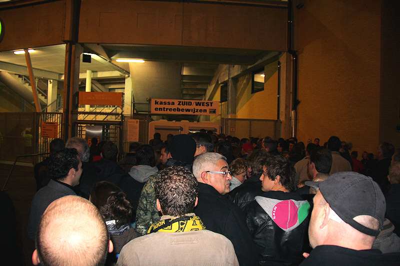
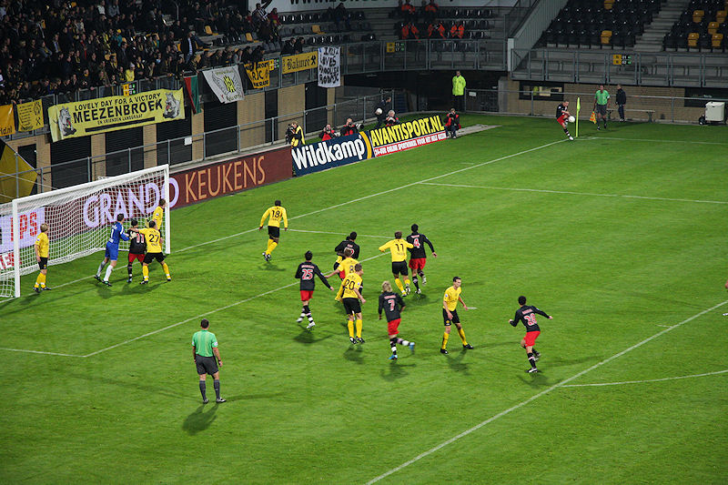

't is ein kwestie van geduld....
"Gemeente Waalwijk laat RKC niet in de steek". Rodasupporters weten maar al
te best hoe het voelt als de club op het spel staat.
In het onverwacht goed bezette stadion was het eerste halfuur voor Roda.
JP Saeijs i.p.v. Addo. Van Veldhoven snapt het eindelijk.

PSV komt steeds beter in de wedstrijd en dwingt een hele rits corners af.
Afellay passt op de doorgelopen Manolev die op Castro afgaat...
... en scoort: 0-1, (32').

Paal en een grabbelende Castro voorkomen een tweede doelpunt voor PSV.
Scheidsrechter Vink bleek een Philips-fluiter, de grensrechters stekenblind.
Saeijs kopt goed in en dwingt Isaksson tot een ultieme redding.

Een simpele aanval via Dzsudzsak en Reis. De Brazilliaan scoort 0-2, (78').
Omdat er op het veld niet veel meer gebeurt moet het vuurwerk maar van de
tribunes komen...
Het publiek was het niet eens met de wissels van Van Veldhoven die zich bij
voorbaat de woede van de supporters op de hals haalde door
te verkondigen dat de beker minder belangrijk is dan de competitie. Niet
iedereen begreep de strekking van die woorden waardoor de eerste
witte zakdoeken weer eens door het PLS wapperden.
Supporters uit Beesel, Roermond en Herkenbosch (8% van Roda's SCC-houders
komt uit Midden-Limburg).
De sfeer in de Kickoff.
De gasten werden als vanouds weggejaagd door de veel te luide muziek.
Slechts deze voetbalkast in de ultiem foute kleuren hield nog een
handjevol mensen inpandig.